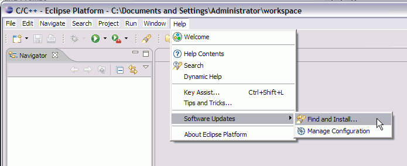

- For the "light" version, scroll down to the heading "Platform Runtime Binary" and download the tar (or zip) file for your platform. This is about 1/3 to 1/4 the size of the full SDK, and doesn't include the Java or Eclipse Plug-in development parts, which I assume you don't need. The UI is simpler since you don't have all those additional options.
- The Eclipse SDK works just fine, though, if you prefer that, and may be more complete.
On the main downloads page for 3.2.2 above, see
"Eclipse SDK" near the top of the page, and download the SDK for your platform.
Eclipse 3.3 has a pre-built version for C/C++ development, so that should simplify installation in the future.
After downloading and extracting Eclipse (zip or tar file), there's nothing else to the installation process. In the extracted folder, simply run the eclipse executable file. It will ask for a workspace location; the default is fine.
- Help > Software Updates > Find and Install...
 - Select "Search for new features to install",

- Click Next, Select "Callisto Discovery Site" and click "Finish."
(The Callisto discovery site lists Eclipse plug-ins guaranteed to work with the 3.2 version of Eclipse.)
- When the Callisto Update site is loaded you see another Dialog.
Expand the "Callisto Discovery Site" item and check the "C and C++ Development" item.
- Click Next, accept the license terms, Click Next, and click Finish.
- On the Verification page, click "Install All."
- When it's done, click "Yes" to restart the Eclipse workbench. Then you can
install PTP from its update site as well.
(Jump to step 3. below...)
Or click "no"
to close down Eclipse if you prefer to install PTP from downloaded tar.gz files.
- Note: the above installs the runtime version of CDT. If you intend to develop
plug-ins with CDT, be sure to get the full SDK version.
The CDT SDK as well as the runtime are available from the CDT Update Site (as opposed to the Callisto discovery site mentioned above). The CDT Update Site is available by entering the following URL as the Remote Site in the Update Manager.- http://download.eclipse.org/tools/cdt/releases/callisto
- (Recommended) Use the update manager and the PTP update site. See the update site for more details.
- or close Eclipse, download PTP and PLDT from the PTP downloads page.
- Now follow the instructions in the release notes and installation instructions page. (You'll need to build a small stub for your platform.)